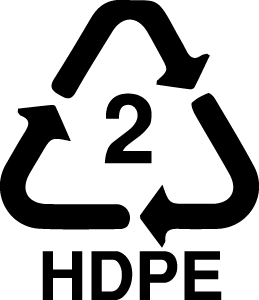
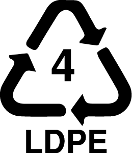
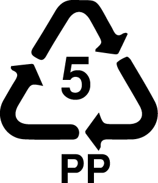

LABORATORIO DE EXPERIMENTACIÓN DE RESIDUOS PLÁSTICOS - ECONOMÍA CIRCULAR - EDUCACIÓN AMBIENTAL - ARTE - :) LABORATORIO DE EXPERIMENTACIÓN DE RESIDUOS PLÁSTICOS - ECONOMÍA CIRCULAR - EDUCACIÓN AMBIENTAL - ARTE - :) -
Transformamos estos Tipos de Plásticos ::
:: Transformamos estos Tipos de Plásticos ::
::

POLIETILENO DE ALTA DENSIDAD
Propiedades: Difícil de flexionar, resistente a los productos químicos y a la humedad, cerosa superficie, se ablanda a los 75°
Usos: Bolsas de compras, bolsas para congelar, botellas de leche, botellas de jugo, envases de helado, champú, cajas.
Reacción al Fuego: Difícil de encender.

POLIETILENO DE BAJA DENSIDAD
Propiedades: Suave, flexible, superficie cerosa, se araña fácilmente, se ablanda a los 70°
Usos: Film transparente, bolsas de basura, botellas de compresión, plásticos de cultivos.
Reacción al Fuego: Difícil de encender.

POLIPROPILENO
Propiedades: Duro flexible, superficie cerosa, translúcida, resiste a disolventes, se ablanda a los 140°
Usos: Botellas, tubos de helado, pajitas, maceteros, platos, muebles de jardín, recipientes para alimentos.
Reacción al Fuego: Llama inclinada de color azul y verde
Fuente de Datos sobre Propiedades Visuales: Precious Plastic.